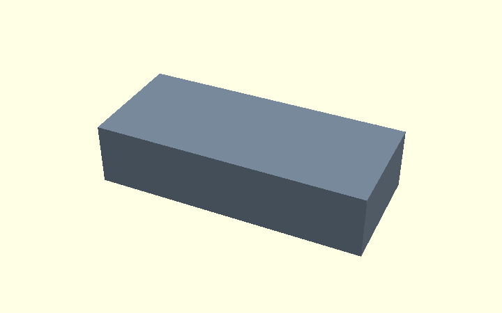
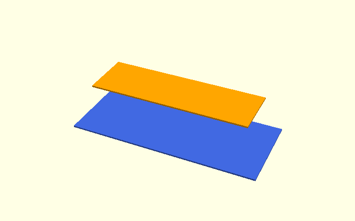
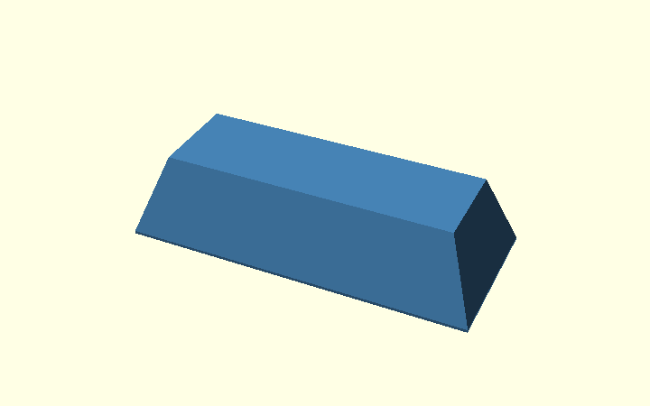
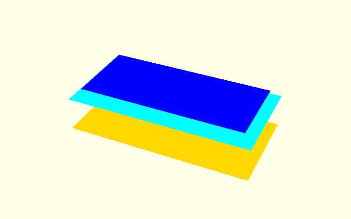

Understanding hull() — a simple introduction
This page teaches only the basic hull() operation. The
Chamfer Guide is the single detailed explanation
of the actual Corner Bracket: its already-chamfered polygon, outside
edge bevels, elephant-foot relief and arm-tip junctions.
For the separate 2D construction of the rounded inside corner, see the Polygon Guide.
In OpenSCAD, hull() creates the smallest convex shape containing
all its children. It connects shapes smoothly in the geometric sense
of straight, sloping connecting surfaces; it does not automatically
make rounded curves or preserve concave openings.
1. Connect two differently sized layers
This demonstration uses an ordinary rectangular block, not the production bracket. Its purpose is to make the hull operation easy to recognise before the more complicated L-shaped model.
A. A bar with square edges

openscad
module original_bar() {
translate([0, 0, height/2])
cube([length, width, height], center=true);
}
B. First input: a full-size, thin base layer

openscad
module wide_layer() {
translate([0, 0, slice_thickness/2])
cube([length, width, slice_thickness], center=true);
}
C. Second input: a smaller layer at the top
The second layer is inset by chamfer on all four sides.

openscad
module narrow_layer() {
translate([0, 0, height - slice_thickness/2])
cube([length-2*chamfer, width-2*chamfer,
slice_thickness], center=true);
}
D. Hull: the smallest convex solid around both layers

openscad
module sloped_hull() {
hull() {
wide_layer();
narrow_layer();
}
}
The visible slope comes from the size difference and distance
between the two inputs. Nothing is rounded by hull() here.
E. Optional: clip with the original bar

openscad
intersection() {
original_bar();
sloped_hull();
}
In this simple example, the hull already stays inside the original bar, so clipping barely changes the result. For the real L bracket it matters much more: an outside convex hull temporarily fills the concave opening between the arms. Intersecting it with the original L preserves that opening.
2. Where does this appear in the real bracket?
The bracket uses two different roles for hulls:
- Outside bevel
cs: connect a full outside outline with a smaller outline. This hull is used as a limiting envelope and intersected with the actual L. - Elephant-foot relief
ef: connect two profiles of the empty space between the arms, one expanded by 0.6 mm. The hull becomes a cutting volume and is subtracted from the solid. There is one per printed side; the current model also has small junction hulls where the relief meets the outside bevel.
These are different applications of the same hull() principle.
For the actual input geometry, code and the reason the arm-tip junction
needs its own small 3D hulls, continue to the
Chamfer Guide.
3. Optional experiment: a single hull for two bevels
For a straight convex bar, four layers can be enclosed in one
hull(): inset at the bottom, full-size in the centre and inset at
the top. This forms both a bottom print allowance and a top bevel.


The editable
combined-chamfer prototype
demonstrates this for a straight convex bar only. At the Corner
Bracket arm tip, the required EF cutter plus its cs junction is
non-convex. Putting both into one hull() fills the convex envelope
between them and removes too much material. See
Section 4 of the Chamfer Guide.